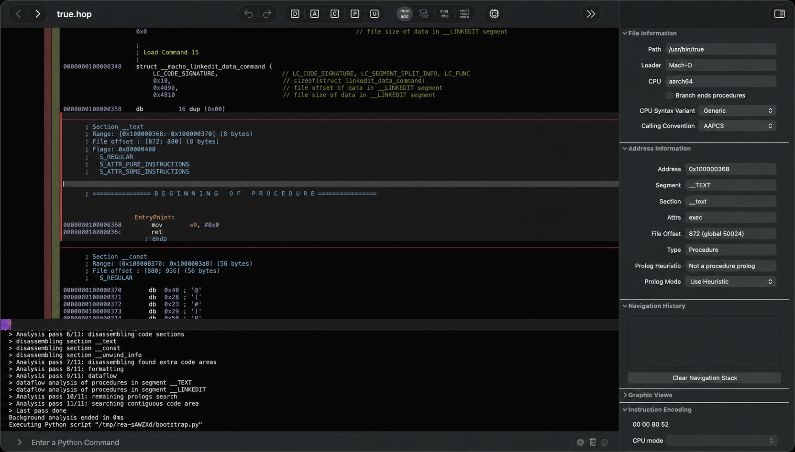
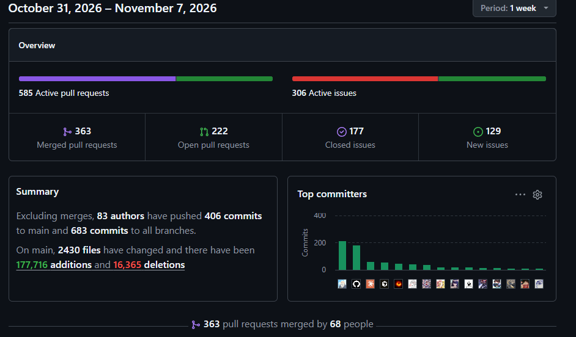
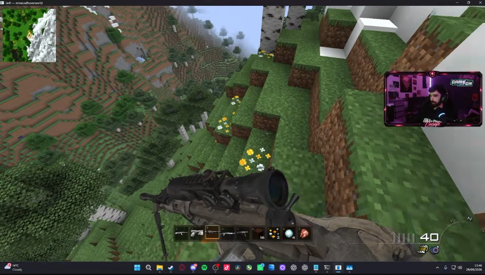
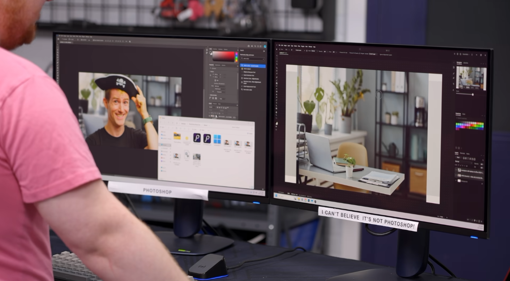
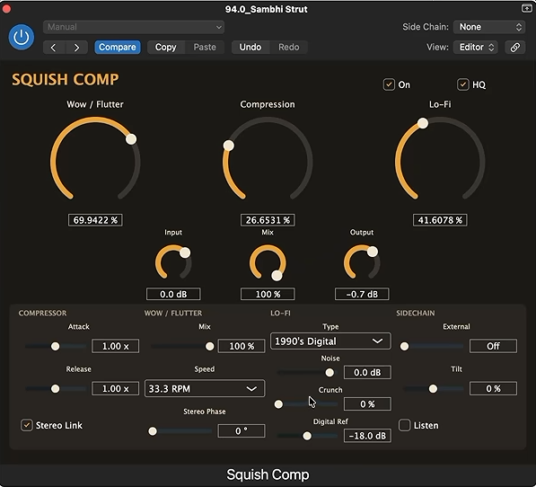

Servidor MCP + skill
Conecta agentes como Claude Code o Codex con herramientas de análisis. En la versión 6.7.0 se reportaron 207 herramientas disponibles.
Actualidad · octubre–noviembre de 2026
Un plugin para agentes de IA, miles de proyectos que replican software ajeno y una pregunta que divide a la industria: ¿estamos ante el fin del software cerrado o ante una exageración viral?
Es el proceso de estudiar un producto terminado, sea un programa, un dispositivo o un protocolo, para entender cómo funciona sin tener sus planos originales. En software suele significar analizar el comportamiento de un programa o decompilar su binario con herramientas como Ghidra, IDA o Hopper.
No es nueva ni es «mala» por definición. Se usa para:
Lo nuevo es la velocidad y el costo: lo que antes tomaba años de trabajo voluntario hoy puede avanzar en semanas con agentes que trabajan sin parar.

REA es un proyecto de código abierto que se instala como complemento de un agente de IA. Según la documentación y las guías publicadas, combina un servidor MCP con un conjunto de instrucciones («skill») para que el agente pueda investigar una aplicación con herramientas reales.
Conecta agentes como Claude Code o Codex con herramientas de análisis. En la versión 6.7.0 se reportaron 207 herramientas disponibles.
Funcionan de entrada. Para ejecutables nativos hace falta instalar aparte Ghidra, IDA o Hopper, y para APK de Android, un JDK.
Su método separa lo que el agente comprobó en los archivos, lo que dedujo y lo que no logró averiguar, para no tratar suposiciones como hechos.
Su propio README aclara que no promete recuperar el código fuente original ni clonar una aplicación entera de forma automática. Entrega evidencia; construir la nueva versión sigue siendo trabajo del agente y de la persona. Muchos titulares prometían más de lo que la herramienta dice hacer.
Según la descripción del proyecto, está pensado para investigación lícita, educación, interoperabilidad, preservación de software y análisis de programas que posees o estás autorizado a examinar.
El repositorio trepó al primer lugar de las tendencias de GitHub y superó las 340 mil estrellas en cuestión de días. Influyentes de la tecnología lo resumieron con frases como «el software se acabó», y el CEO de Replit fue citado diciendo que casi todo el software terminará siendo de código abierto.
La cobertura internacional lo comparó con lo que hicieron las redes de intercambio de MP3 a finales de los 90: una tecnología que rompe la escasez de algo que parecía protegido. Medios como 404 Media hablaron de un «nuevo Lejano Oeste» de la IA, con software descompilado, clonado y modificado circulando sin control.
También hay una lectura esperanzadora: comunidades de reparación y preservación llevan años devolviendo vida a dispositivos «muertos», y estas herramientas les dan una ayuda enorme.

Casos reales
A mediados de septiembre, un desarrollador publicó IW4L, un motor para Call of Duty: Modern Warfare 2 (2009) escrito desde cero en Rust, tras inspeccionar los archivos del juego con Ghidra. Dos semanas después, otro modder lo usó para combinar el juego con la física de Skate 3 y un mundo estilo Minecraft: caminas con armas de Call of Duty y con una tecla saltas a un skate. El mashup necesita que el jugador tenga su propia copia de los juegos originales.
Una suite abierta llamada ArtCraft (PhotoCraft, VectorCraft y FilmCraft) se hizo famosa por su pretensión de ser una reimplementación «clean room» basada en especificaciones públicas y comportamiento observado. Su autor dijo públicamente que no usó REA para proteger esa defensa. El proyecto afirma que 134 de 135 archivos PSD de prueba se abren y guardan idénticos.
Varios desarrolladores contaron cómo agentes de IA reconstruyeron gran parte de Call of Duty: Modern Warfare 2 (2009) en C++. Otros proyectos de decompilación «matching», que busca código que compile idéntico al binario original, alcanzaron hitos en GoldenEye 007, Super Smash Bros. Melee y Halo: Combat Evolved. El truco: esa comparación byte a byte le da al agente una prueba objetiva de acierto que puede repetir sin supervisión.
Empresas populares como Waves, Fabfilter, NeuralDSP, GGD y muchas otras han sido clonadas por la comunidad, recreando sus mejores plugins sin tener una sola línea del código fuente original.



Hay mayor riesgo cuando se clona un producto de un competidor directo, cuando se reutilizan recursos gráficos o de audio y cuando hay contratos o términos de servicio que prohíben analizar el software. Los términos de algunos proveedores de IA, por ejemplo, prohíben hacer ingeniería inversa a sus propios servicios, y se ha informado que algunos asistentes han empezado a rechazar peticiones de clonar videojuegos identificables.